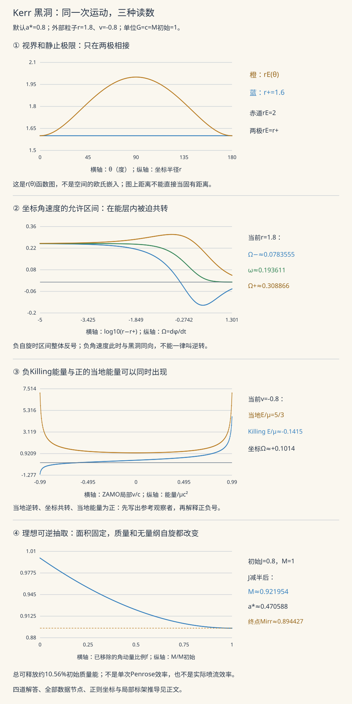

本页目录
广义相对论 IV · Kerr 时空、能层与因果结构
前置：等效原理与局部标架、Schwarzschild 的轨道与视界、黑洞热力学与引力波。本页从度规出发，区分三种读数：坐标角速度、局部速度，以及由时间平移对称性定义的能量。
一个粒子可以在坐标上与黑洞同向旋转，同时相对当地的零角动量观察者逆转。它甚至可以有负的 Killing 能量，而当地测得的能量仍为正。关键是每个量都要说明由谁、怎样定义。
学习层：同一次运动，三种读数
先预测，再改参数
- 负自旋黑洞能层中的负角速度，代表顺着黑洞转，还是逆着转？
- 固定位置的轨道在静止极限面上为类光，是否就一定是自由光子的测地线？
- 负 Killing 能量，是否意味着当地仪器会测得负能量？
- 黑洞总共可释放的理想旋转能上界，是否等于每一次粒子分裂或喷流的效率？
实验有两组读数。第一组使用赤道面外部的 Kerr 度规，逐个计算允许角速度、局部 ZAMO 速度与粒子能量。第二组沿保持不可约质量不变的可逆理想路径，计算质量、角动量和面积。前者没有求完整粒子轨道，后者没有模拟实际抽取装置。
无 JavaScript 时可直接检查这组数值。下表采用 G=c=M初始=1，自旋a*=0.8；外部粒子在r=1.8，局部方位速度v=-0.8，静质量μ=1。
| 对象 | 数值或关系 | 怎样解释 |
|---|---|---|
| 外视界、赤道静止极限 | r+=1.6，rE=2 | 能层位于外视界之外 |
| r=1.8允许的角速度 | 0.0783555≤Ω≤0.308866 | 等号是局部类光方向；物质轨道取严格内部 |
| ZAMO角速度、lapse | ω≈0.193611，α≈0.246956 | ω是坐标量，α连接参考系的固有时与坐标时间 |
| 粒子局部速度、当地能量 | v=-0.8，γ=5/3 | 相对ZAMO逆转，当地能量为正 |
| 同一粒子的坐标角速度 | Ω≈0.101407>0 | 仍在能层中与正自旋同向转 |
| 同一粒子的远方能量与角动量 | E/μ≈-0.141536，L/μ≈-2.85692 | E与L由不同的Killing对称性定义 |
| 负能量阈值 | v<-0.595294 | 此阈值只表示局部切向动量可具有负E，不保证完成逃逸/捕获过程 |
| 初始面积、不可约质量 | A≈40.2124，Mirr≈0.894427 | 单位分别是初始质量的长度尺度平方、初始质量 |
| 可逆地把J从0.8减至0.4 | M≈0.921954，释放≈0.0780456 | 面积保持不变，是连续理想路径 |
| 可逆地抽尽旋转 | 最多释放≈0.105573 | 约10.56%的初始质量能；不是单次Penrose效率 |
输入保留正负自旋。外部模式仅在外视界外计算；“精确静止极限”把位置直接设为赤道的 r=2，要求 |a*|≥0.01。手动位置若与边界近到浮点数不能可靠区分，会标为“数值未分辨”，不会悄悄判定在某一侧。表格保留全部径向、速度和纬度节点。

1. 先把单位与对称性说清楚
用物理质量 \(M_{\rm phys}\) 定义长度 \(r_g=GM_{\rm phys}/c^2\)、时间 \(t_g=GM_{\rm phys}/c^3\)，并定义无量纲自旋
本页外部实验用 \(r/r_g\)、\(t/t_g\) 作坐标，记作 \(r,t\)；写度规时再把 \(a_*\) 简记为 \(a\)。因而使用 \(G=c=M=1\)，且 \(|a|<1\)。恢复坐标角速度的单位时，应乘 \(c^3/(GM_{\rm phys})\)；恢复面积时乘 \(r_g^2\)。不要把无量纲自旋与带长度单位的 \(J/(Mc)\) 混用。
Kerr 是平稳、轴对称、渐近平坦的真空解。它不是任意旋转恒星的内外部解：物质、磁场、时变扰动以及额外多极结构，都需要各自的方程和边界条件。黑洞唯一性结论有维数、场方程、正则性和全局条件，不能用“只有两个参数”取代这些前提。
在 Boyer–Lindquist 坐标中，定义
一种方便代入计算的写法是
展开后得到熟悉的交叉项 \(-4ar\sin^2\theta\,dt\,d\phi/\Sigma\)。因为线元中的混合项是 \(2g_{t\phi}dt\,d\phi\)，度规分量是这个系数的一半。
系数不依赖 \(t,\phi\)，所以
分别是时间平移和轴向旋转的 Killing 向量。对四动量 \(p^\mu\)，定义
沿自由测地线，\(p^\nu\nabla_\nu p^\mu=0\) 与 Killing 方程共同给出这两个量守恒。例如
时间平移对应能量，轴对称对应角动量。若轨道由外力维持，仍可在每个点定义 \(E,L\)，但它们是否随运动守恒要检查外力所做的功和力矩。Kerr 的度规与两种对称性：Tong，§6.3.1
2. 两种曲面：哪一种阻止静止，哪一种是视界？
令 \(s=\sqrt{1-a^2}\)，有
在理想 Kerr 黑洞的外部延拓中，\(r_+\) 是外视界，\(r_-\) 是内视界。仅看坐标分母 \(\Delta\) 并没有完成事件视界的全局定义，下面还要检查正则坐标和视界生成元。
静止轨道的切向量是 \(\xi=\partial_t\)，其范数
它在外静止极限面上变成零：
赤道上 \(r_E=2\)；两极上 \(r_E=r_+\)。在两者之间的外部区域，\(\xi\) 类空，固定 \(r,\theta,\phi\) 的物质观察者不可能存在。这一能层的宽度依赖纬度，不是包在视界里面的另一层墙。
静态机制图画的是坐标函数 \(r_E(\theta)\) 与常数 \(r_+\)。它不是 Kerr 空间切片的欧氏嵌入图，也不能用图上长度直接测固有距离。
2.1 真的把视界处的坏分母消掉
同时更换时间与方位坐标：
令 \(\mathcal B=dv-a\sin^2\theta\,d\widetilde\phi\)。原先第一个括号变为
第二个括号中的两个 \(dr\) 项则直接相消。于是原本带有 \(1/\Delta\) 的 \(dr^2\) 项消失，得到
交叉项前的 2 来自展开平方，不能省略。新度规的行列式为
因此在外视界的普通非轴点，\(\Sigma>0\) 且坐标系非退化；轴上的 \(\sin\theta=0\) 仍是角坐标本身的问题，可换角坐标片处理。这直接展示了 Boyer–Lindquist 视界奇性可移除。它没有声称当地潮汐必然很小。
在外视界上，生成元是
把它代入度规并用 \(\Delta(r_+)=0\)，可核对 \(\chi^2=0\)。\(\Omega_H\) 是 Killing 视界生成元的角速度参数；它不需要一个有材料组成的旋转表面。正则坐标、延拓与视界：Reall，Black Holes，第7章
3. 从因果锥到当地速度计
在赤道面外部，记
为避免反复展开，利用恒等式
定义拖曳角速度与 lapse
固定 \(r,\theta\) 后，线元可完成平方：
因此允许的坐标角速度为
物质世界线取 \(\Omega_-<\Omega<\Omega_+\)，端点只表示该点的类光切向方向。外部完整度规的径向与纬向项为正，所以即使允许 \(dr,d\theta\ne0\)，也不能越出这个角速度区间；非零径向速度反而占用了部分因果余量。
若 \(a>0\)，能层中两端均正；若 \(a<0\)，两端均负。两种情况都与黑洞同向。判断“反向”必须相对于自旋符号，不能只检验角速度是否小于零。
3.1 ZAMO 的四速度与局部方位速度
取参考观察者
直接代入可验证
最后一式说明它的轴向角动量为零，故称 ZAMO。它一般需要加速度维持固定半径，不是“所有自由落体观察者”的同义词。
一个仅有方位局部速度 \(v\) 的粒子可写成
这里 \(v\) 以光速为单位，是 ZAMO 测得的速度。展开坐标分量：
于是 \(|v|<1\) 正好对应因果角速度区间内部。\(\Omega\) 和 \(v\) 不是两个相互竞争的答案，而是两个明确参考系下的读数。
3.2 静止极限的类光曲线不一定是测地线
在赤道静止极限 \(r=2\)，\(\xi^2=0\)。但 Killing 恒等式还告诉我们
该点的径向分量是
对于 \(a\ne0\) 它不为零，且不与 \(\xi\) 平行。因此这条保持空间坐标固定的类光曲线不是自由光子的测地线。因果锥端点描述允许的瞬时方向，轨道能否一直保持该方向还要满足测地线方程。
实验的“精确静止极限”据此只标注类光边界，不把它叫作圆形光子轨道。
4. 当地能量为正，为何远方能量可以为负？
给粒子静质量 \(\mu\)，由上一节四速度降指标得到
当地能量则是
负的 \(E\) 表示相对于时间平移 Killing 向量的守恒量为负。能层里这个向量类空，不再是当地物理观察者的四速度，所以 \(E\) 没有当地能量那样的正定性。
当 \(a>0\) 时，负能量要求
当 \(a<0\) 时不等号反向。只有在能层中阈值才落入完整的物理速度区间 \((-1,1)\)。实验为了避免无限 \(\gamma\)，扫描 \(-0.99\le v\le0.99\)；非常靠近静止极限时，这个有限扫描可能看不到负能量段，不能据此声称数学上不存在。
默认 \(a=0.8,r=1.8,v=-0.8\) 时，
它相对 ZAMO 逆转、相对坐标仍共转、当地能量为正。若同时把 \(a,v\) 反号，\(L,\Omega\) 反号，而 \(E\) 与 \(\gamma\) 不变；这是实验应通过的方向反演检查。
4.1 Penrose 过程还缺哪些条件？
在能层某点，粒子分裂要求局部四动量守恒：
若安排一个分支以 \(E_1<0\) 被黑洞吸收，另一个分支逃逸，则 \(E_2=E_0+|E_1|\)。多出的能量来自黑洞的旋转能，不能只画出一个负能量切向量就声称完成了过程：分裂的质量壳条件、可实现动量、捕获与逃逸轨道都要满足。
穿过未来视界的未来因果动量还必须满足
对真正穿越的类时粒子，内积严格为负；等号可作为可逆理想极限。这个必要条件并不保证某个从外部给出的初始条件一定能到达视界。Penrose 过程的局部守恒与视界不等式：Reall，§7.5
5. 可抽取多少：面积与不可约质量
这一节保留几何单位 \(G=c=1\)，但恢复可变化的质量 \(M\)，不再把演化中的质量每一步重新归一为 1。用初始质量作为固定单位，令初始 \(M_0=1,J_0=a_0\)。
视界截面的面积来自诱导二维度规。利用 \(\Delta(r_+)=0\)，面积元为 \((r_+^2+a_{\rm length}^2)\sin\theta\,d\theta\,d\phi\)，所以
其中 \(a_{\rm length}=J/M\)，与无量纲自旋 \(a_*=J/M^2\) 区分。定义不可约质量
在经典面积不减的适用条件下，\(M_{\rm irr}\) 不能下降。理想可逆路径令它不变，逐渐移除角动量，最终 \(J=0\) 时只能降到 \(M=M_{\rm irr}\)，故初始可抽取比例至多为
物理能量需再乘 \(M_{0,\rm phys}c^2\)。在极端自旋的形式极限，比例趋于 \(1-1/\sqrt2\simeq29.29\%\)；本实验只取 \(|a_*|\le0.9999\)，不把数值端点称为精确极端解。这个比例是理想总储量上界，既不是单次 Penrose 分裂的效率，也不是实际吸积盘或喷流效率。
5.1 将可逆路径完整算出来
取 \(0\le f\le1\) 表示已移除的初始角动量比例，
于是
实验使用等价的稳定表达式
保留小自旋或很小 \(f\) 时微小但非零的释放量，而不直接相减两个几乎相同的质量。
若记 \(I=M_{\rm irr}^2\)，对质量公式求偏导得到
同时 \(\partial M/\partial I=2\kappa\)、\(dA=16\pi\,dI\)，所以
前一式是这里的黑洞力学第一定律，后一式是 Smarr 关系。可逆路径上 \(dA=0\)，因此 \(dM=\Omega_H\,dJ\)；它与上节的视界必要条件相容，但不保证某个实际装置能实现等号。
6. 内部因果结构：给数学结论注明范围
先进 Kerr 坐标在非极端外视界处光滑，因而“某个分量发散”不能阻止数学上的局部延拓。理想最大解析延拓还包含内 Cauchy 视界、不同区域以及 \(\Sigma=0\) 的环形曲率奇性。Cauchy 视界的关键性质是：越过它以后，原来的初始数据不再唯一决定全部延拓区域。
Kerr 不是球对称时空，不能随意删掉角坐标，便把一张二维图当作全部四维因果结构。一个明确做法是限制在对称轴的二维子流形，再说明所画的是哪一部分。真实坍缩、扰动和内视界稳定性则是进一步的问题；理想解析延拓不自动是天体黑洞内部的可靠路线图。轴子流形与 Cauchy 视界的范围：Reall，第7章
本页完整计算的是外部固定半径的切向因果锥、局部能量和理想可逆参数路径。进一步研究粒子轨道，需要加入径向、纬向测地线方程及 Carter 常数；研究电磁抽取则应转到吸积与喷流，把场与物质的动力学一起算。
7. 四道迁移题与完整解答
练习1：把默认自旋与局部速度同时反号，哪些读数不变？
\(r_\pm,\Delta,B,\alpha,\gamma\) 只依赖自旋的平方或速度的平方，因此不变。\(\omega,\Omega_H\) 与自旋同号，\(L/\mu=\gamma\sqrt B\,v\) 随速度反号。代入 \(\Omega=\omega+\alpha v/\sqrt B\) 得 \(\Omega\) 反号，而 \(\omega v\) 不变，所以 \(E/\mu\) 不变。
默认反演后 \(a=-0.8,v=0.8\)，\(\Omega\simeq-0.101407\)、\(L/\mu\simeq2.856917\)、\(E/\mu\simeq-0.141536\)。角速度为负仍是与负自旋黑洞同向。旧式“负号就是逆转”的判据在此失效。
练习2：精确设r=2后，为什么不能说有一条静止的圆形光子测地线？
\(g_{tt}=0\) 只证明固定位置曲线的切向量 \(\xi\) 类光。还应检查 \(\nabla_\xi\xi\) 是否为 \(\xi\) 的倍数。利用 Killing 恒等式和赤道 \(g^{rr}=\Delta/r^2\) 得
当 \(a=0.8\) 时为 \(0.04\)，但 \(\xi^r=0\)。因此该加速度不可能只是参数化带来的沿切向项；它不是测地线。真正圆形光子轨道必须额外满足径向测地线条件。
练习3：核对默认负能量粒子的当地能量，并检查视界吸收的必要条件。
使用 \(E/\mu\simeq-0.1415362883\)、\(L/\mu\simeq-2.856917099\)、\(\omega\simeq0.1936108422\)、\(\alpha\simeq0.2469563024\)，有
因此当地能量为正。初始黑洞 \(\Omega_H=0.25\)，代入得到
它满足视界未来因果动量的必要不等式。这里选的是一个固定半径的局部切向量，尚未积分后续自由轨道，也没有检查某个分裂过程能否产生它；因此不能据此宣布完成了 Penrose 抽取。
练习4：a0=0.8，保持面积不变，把J先减半再减到零。比较质量、自旋和能量。
初始 \(I=M_{\rm irr}^2=0.8\)。减半时 \(J=0.4\)，
已释放 \(1-M\simeq0.0780455543\)，面积仍为 \(16\pi I=12.8\pi\)。角动量减半并没有使无量纲自旋恰好减半，因为分母中的质量也改变了。
最后 \(J=0\)、\(M=\sqrt{0.8}\simeq0.894427191\)，总释放约 \(0.105572809\)。不可逆过程会使面积增加，从而降低这一理想可抽取储量；不能把可逆路径当作真实装置的效率预测。